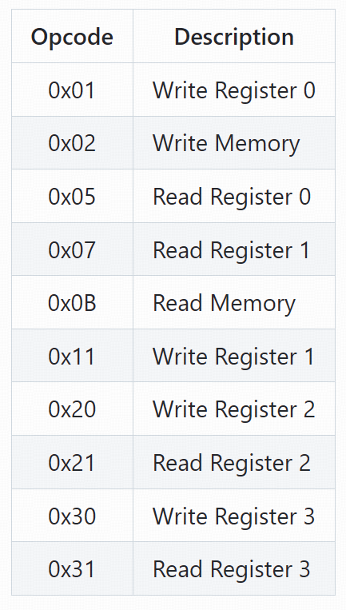
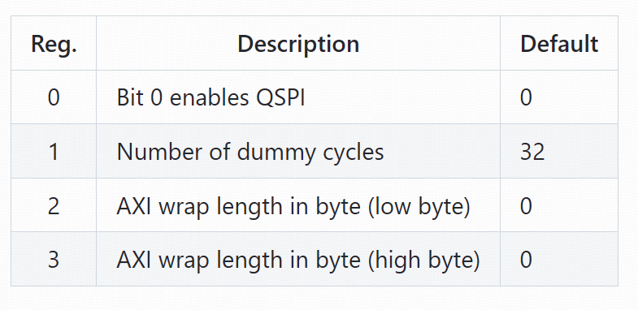
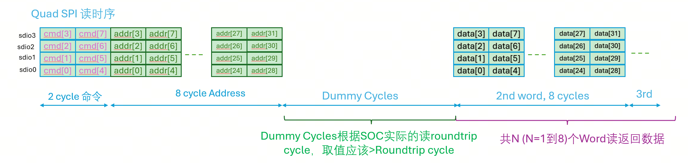

SPI2AXI Bridge 微架构规格书
Micro-Architecture Low-Level Design (LLD) — AI-Executable 14-Chapter Template
v1.0
SPI2AXI Bridge
Draft
SPI 50MHz / AXI4-Lite / QSPI
本文档是 SPI2AXI Bridge IP 的低电平设计规格书（LLD），严格遵循 AI-Executable 14 章节模板结构。每个章节提供 cycle-level 精确的接口时序、FSM 状态转移矩阵、bit-level CSR 定义以及可执行的 SDC 约束模板。
第1章 模块概述 (Module Overview)
1.1 模块身份 (Module Identity)
属性 值 模块全名 SPI2AXI Bridge (spi2axi_bridge_top) 层次路径 soc.periph_bus.spi2axi_bridge 工艺 / PVT 待补充 目标频率 SPI: 50MHz / AXI: 取决于 SoC 供电电压 待补充 面积预算 待补充 功耗预算 待补充
1.2 顶层端口概要 (Top-Level Ports Summary)
Port Group Direction Width Description spi_sclk input 1 SPI 时钟 @ 50MHz spi_cs_n input 1 SPI 片选，低有效 spi_sdi input 4 SPI 数据输入 spi_sdo output 4 SPI 数据输出 axi_* in/out 多 AXI4-Lite Master 接口
1.3 模块特性 (Module Features)
支持标准 SPI (1-wire) 和 Quad SPI (4-wire/QSPI) 双模协议
SPI 命令到 AXI4-Lite 总线事务透明转换
Dual-clock 异步 FIFO 实现可靠 CDC 传输
可配置地址环绕 (Wrap) 功能，支持循环缓冲区访问模式
可编程 Dummy Cycles (读操作等待周期)
SPI 侧配置寄存器组，支持模式选择、状态查询
第2章 接口规范 (Interface Specification)
2.1 端口信号表 (Port Signal Table)
2.1.1 SPI 接口信号
Signal Name Dir Width Type Clock Domain Reset Domain Description spi_sclk input 1 clock — — SPI 串行时钟，最高 50MHz spi_cs_n input 1 data async spi_clk rst_n_spi SPI 片选，低有效 spi_sdi input 4 data spi_clk rst_n_spi SPI 数据输入 (1-wire: sdi[0], 4-wire: sdi[3:0]) spi_sdo output 4 data spi_clk rst_n_spi SPI 数据输出 (1-wire: sdo[0], 4-wire: sdo[3:0])
2.1.2 AXI4-Lite Master 接口信号
Signal Name Dir Width Type Description axi_aclk input 1 clock AXI 系统时钟 axi_areset_n input 1 reset async AXI 复位，低有效 写地址通道 (AW) m_axi_awaddr output 32 data 写地址 m_axi_awvalid output 1 handshake 写地址有效 m_axi_awready input 1 handshake 写地址就绪 (Slave) 写数据通道 (W) m_axi_wdata output 32 data 写数据 m_axi_wstrb output 4 data 写选通 m_axi_wvalid output 1 handshake 写数据有效 m_axi_wready input 1 handshake 写数据就绪 (Slave) 写响应通道 (B) m_axi_bresp input 2 response 写响应 (OKAY=0, EXOKAY=1, SLVERR=2, DECERR=3) m_axi_bvalid input 1 handshake 写响应有效 (Slave) m_axi_bready output 1 handshake 写响应就绪 读地址通道 (AR) m_axi_araddr output 32 data 读地址 m_axi_arvalid output 1 handshake 读地址有效 m_axi_arready input 1 handshake 读地址就绪 (Slave) 读数据通道 (R) m_axi_rdata input 32 data 读数据 m_axi_rresp input 2 response 读响应 m_axi_rvalid input 1 handshake 读数据有效 (Slave) m_axi_rready output 1 handshake 读数据就绪 m_axi_rlast input 1 handshake 读最后一个数据 (Slave)
2.2 Cycle-Level 接口时序
2.2.1 SPI 写操作帧格式 (Standard 1-wire Mode)
2.2.2 SPI 读操作帧格式 (含 Dummy Cycles)
2.3 帧格式对比 (1-wire vs 4-wire)
参数 Standard SPI (1-wire) QSPI (4-wire) 数据线数 1 (spi_sdi[0] + spi_sdo[0]) 4 (spi_sdi[3:0] + spi_sdo[3:0]) 每 SCLK 传输位数 1 bit 4 bits 写帧总 SCLK (OP+ADDR+DATA) 72 SCLK 18 SCLK 读帧总 SCLK (OP+ADDR+DUM+DATA) 104 SCLK 26 SCLK 有效吞吐率 (50MHz) 6.25 MB/s 25 MB/s
第3章 子模块划分 (Sub-Module Partition)
模块名称 类型 时钟域 复位域 功能描述 spi_slave_if Interface spi_sclk rst_n_spi SPI 协议层处理，1-wire/4-wire 数据串并/并串转换 cmd_decoder_fsm Ctrl FSM spi_sclk rst_n_spi 8-bit 操作码解析，FSM 状态迁移，AXI 传输控制 async_fifo FIFO Dual-Clock 独立 双时钟异步 FIFO，格雷码同步，CDC 数据缓冲 axi_master_if Interface axi_aclk rst_n_axi AXI4-Lite 5 通道 Master 协议引擎 config_regs CSR spi_sclk rst_n_spi SPI 侧配置寄存器组 wrap_ctrl Addr Gen axi_aclk rst_n_axi 地址环绕控制器 rst_sync Reset spi/axi — 异步复位同步释放
3.1 模块间信号连接表
源模块 信号 方向 目标模块 位宽 描述 spi_slave_if opcode → cmd_decoder_fsm 8 SPI 接收的操作码 spi_slave_if addr → cmd_decoder_fsm 32 SPI 接收的地址 spi_slave_if wdata → cmd_decoder_fsm 32 SPI 接收的写数据 cmd_decoder_fsm axi_cmd → async_fifo 64 AXI 控制字 + 地址 cmd_decoder_fsm wr_data → async_fifo 32 写数据到 FIFO async_fifo axi_cmd_out → axi_master_if 64 AXI 域命令输出 async_fifo rd_data_out → spi_slave_if 32 返回 SPI 域的读数据 axi_master_if axi_done → async_fifo 1 AXI 传输完成 wrap_ctrl next_addr → axi_master_if 32 下一笔传输地址 config_regs mode_sel → spi_slave_if 1 SPI 模式选择 (0:1-wire, 1:4-wire) config_regs wrap_size → wrap_ctrl 8 Wrap 窗口大小配置
第4章 FSM 设计 (FSM Design)
命令解码器 FSM (cmd_decoder_fsm) 是 SPI2AXI 的核心控制单元，在 SPI 时钟域内运行。FSM 共包含 6 个主状态，采用 3-bit 二进制编码实现。FSM 负责响应 SPI 帧的各阶段，生成 AXI 事务控制信号并管理跨时钟域数据传递。
4.1 状态编码表
状态名 Binary Gray 描述 IDLE 3'b000 3'b000 空闲状态，等待 spi_cs_n 拉低 OPCODE 3'b001 3'b001 接收 8-bit 操作码，移位寄存器逐位采样 ADDR 3'b010 3'b011 接收 32-bit 地址 (MSB first)，仅内存访问需要 DUMMY 3'b011 3'b010 插入可编程 dummy cycles (DUMMY_CYCLES+1) DATA 3'b100 3'b110 数据传输阶段，32-bit 数据收发 (MSB first) RESPONSE 3'b101 3'b111 AXI 响应处理或读数据输出完成
4.2 状态转移图和矩阵
stateDiagram-v2
[*] --> IDLE
IDLE --> OPCODE: spi_cs_n == 0
OPCODE --> OPCODE: bit_count < 8
OPCODE --> ADDR: bit_count==8 && MEM_ACCESS
OPCODE --> DATA: bit_count==8 && REG_ACCESS
ADDR --> ADDR: bit_count < 32
ADDR --> DUMMY: bit_count==32 && READ
ADDR --> DATA: bit_count==32 && WRITE
DUMMY --> DUMMY: dummy_cnt < cfg
DUMMY --> DATA: dummy_cnt == cfg
DATA --> DATA: bit_count < 32
DATA --> RESPONSE: bit_count == 32
RESPONSE --> IDLE: axi_done
IDLE --> IDLE: spi_cs_n == 1
OPCODE --> IDLE: abort
DATA --> IDLE: abort
4.3 输出解码表
状态 移位使能 FIFO 写 AXI 启动 bit_count_en dummy_cnt_en IDLE 0 0 0 0 0 OPCODE 1 0 0 1 0 ADDR 1 0 0 1 0 DUMMY 0 0 1 (read) 0 1 DATA 1 1 (write) 1 1 0 RESPONSE 0 0 0 0 0
4.4 SystemVerilog FSM 模板
// SPI2AXI Command Decoder FSM — 3-segment coding
typedef enum logic [2:0] {
ST_IDLE = 3'b000,
ST_OPCODE = 3'b001,
ST_ADDR = 3'b010,
ST_DUMMY = 3'b011,
ST_DATA = 3'b100,
ST_RESPONSE = 3'b101
} state_t;
state_t state, next_state;
// Segment 1: State Register
always_ff @(posedge spi_sclk or negedge rst_n_spi) begin
if (!rst_n_spi) state <= ST_IDLE;
else state <= next_state;
end
// Segment 2: Next State Logic
always_comb begin
next_state = state;
case (state)
ST_IDLE: if (!spi_cs_n) next_state = ST_OPCODE;
ST_OPCODE: if (bit_count == 3'd7) begin
if (opcode_is_mem) next_state = ST_ADDR;
else next_state = ST_DATA;
end
ST_ADDR: if (bit_count == 5'd31) begin
if (opcode_is_read) next_state = ST_DUMMY;
else next_state = ST_DATA;
end
ST_DUMMY: if (dummy_cnt == dummy_cfg) next_state = ST_DATA;
ST_DATA: if (bit_count == 5'd31) next_state = ST_RESPONSE;
ST_RESPONSE: if (axi_done) next_state = ST_IDLE;
default: if (!spi_cs_n) next_state = ST_IDLE;
endcase
end
// Segment 3: Output Decode
always_comb begin
shift_en = (state == ST_OPCODE || state == ST_ADDR || state == ST_DATA);
fifo_wr_en = (state == ST_DATA && !opcode_is_read);
axi_start = (state == ST_DUMMY) || (state == ST_DATA && opcode_is_read);
bit_cnt_en = shift_en;
dummy_cnt_en = (state == ST_DUMMY);
end第5章 流水线设计 (Pipeline Design)
SPI2AXI 的流水线分为 5 个阶段，涵盖从 SPI 命令接收到 AXI 事务完成的整个转换过程。各阶段之间通过异步 FIFO 和握手信号进行数据传递。
Stage Name Clock Domain Operation Latency (cycles) 1 SPI 命令接收 spi_sclk spi_sdi 串行输入，移位寄存器逐位采样 8~72 SCLK 2 命令解码 spi_sclk opcode 解析，AXI 控制字生成 1 SCLK 3 CDC 同步 Cross-domain 写数据/命令→异步 FIFO，读请求→脉冲同步器 2~N AXI clk 4 AXI 总线事务 axi_aclk AXI AW/W/B 或 AR/R 通道完成传输 取决于 AXI Slave 5 数据返回 spi_sclk 读数据经 RX FIFO → 并串转换 → spi_sdo 1~2 SCLK
第6章 数据通路 (Datapath)
6.1 写数据通路
flowchart LR
A[spi_sdi] --> B[Shift Register\n串并转换]
B --> C[cmd_decoder\nFSM]
C --> D[Wr_Data_FIFO\nSPI domain]
D --> E[Async FIFO\nDual-Clock CDC]
E --> F[AXI W Channel\nMaster]
F --> G[AXI Slave\nMemory/Periph]
6.2 读数据通路
flowchart LR
A[cmd_decoder\nFSM] --> B[Pulse Sync\nCDC]
B --> C[AXI AR Channel]
C --> D[AXI Slave]
D --> E[AXI R Channel]
E --> F[Rd_Data_FIFO\nAXI domain]
F --> G[Async FIFO\nDual-Clock CDC]
G --> H[TX FIFO\nSPI domain]
H --> I[Shift Register\n并串转换]
I --> J[spi_sdo]
6.3 Dual-Clock Async FIFO CDC 时序
6.4 控制信号汇总
信号名 位宽 源 目标 功能 opcode_valid 1 spi_slave_if cmd_decoder_fsm 操作码接收完成 addr_valid 1 spi_slave_if cmd_decoder_fsm 地址接收完成 data_valid 1 spi_slave_if cmd_decoder_fsm 数据接收完成 fifo_wr_en 1 cmd_decoder_fsm async_fifo FIFO 写使能 fifo_rd_en 1 axi_master_if async_fifo FIFO 读使能 axi_start 1 cmd_decoder_fsm axi_master_if AXI 事务启动 axi_done 1 axi_master_if cmd_decoder_fsm AXI 事务完成 mode_sel 1 config_regs spi_slave_if 0:1-wire, 1:4-wire wr_fifo_full 1 async_fifo cmd_decoder_fsm FIFO 满标志 rd_fifo_empty 1 async_fifo spi_slave_if FIFO 空标志
第7章 配置寄存器 (Configuration Registers)
7.1 寄存器地址映射
偏移 名称 属性 复位值 功能描述 0x00 SPI_CTRL RW 0x0000_0000 SPI 控制: bit[0]=mode_sel, bit[1]=soft_rst 0x04 WRAP_CFG RW 0x0000_0000 Wrap 配置: bit[7:0]=wrap_size 0x08 DUMMY_CFG RW 0x0000_0020 Dummy 周期: bit[7:0]=dummy_cycles 0x0C STATUS RO 0x0000_0001 状态: bit[0]=ready, bit[1]=busy, bit[2]=wr_done, bit[3]=rd_done 0x10 IP_ID RO 0x53495252 IP 标识: "SIRR"
7.2 Bit-Level CSR 字段定义
SPI_CTRL (0x00, RW)
位域 名称 RW 复位值 HW 置位条件 HW 清除条件 描述 [0] mode_sel RW 1'b0 — — SPI 模式: 0=1-wire, 1=4-wire [1] soft_rst RW 1'b0 — 自动清0 写 1 触发软复位 [31:2] rsvd RO — — — 保留
STATUS (0x0C, RO)
位域 名称 RW 复位值 HW 置位条件 HW 清除条件 描述 [0] ready RO 1'b1 FSM 回到 IDLE FSM 离开 IDLE 模块就绪 [1] busy RO 1'b0 FSM 进入 OPCODE FSM 回到 IDLE 传输进行中 [2] wr_done RO 1'b0 AXI 写响应完成 下一帧开始 写传输完成 [3] rd_done RO 1'b0 读数据输出完成 下一帧开始 读传输完成 [31:4] rsvd RO — — — 保留

Figure 7-3: SPI 命令操作码表和 SPI 侧寄存器设定
Figure 7-4: SPI 操作码到 AXI 事务的映射关系
第8章 时钟与复位 (Clock & Reset)
8.1 时钟域定义
时钟域 源 频率 目标模块 spi_clk (spi_sclk) 外部 SPI Master 最高 50MHz spi_slave_if, cmd_decoder_fsm, config_regs axi_clk (axi_aclk) SoC 系统时钟 取决于 SoC axi_master_if, wrap_ctrl
8.2 CDC 路径与同步方案
CDC 路径 方向 同步器类型 延迟 写命令+地址 SPI → AXI Dual-Clock Async FIFO (格雷码指针) 2~N axi_clk 写数据 SPI → AXI Dual-Clock Async FIFO 2~N axi_clk 读请求脉冲 SPI → AXI 2-FF 脉冲同步器 2 axi_clk 读返回数据 AXI → SPI Dual-Clock Async FIFO 2~N spi_clk AXI 写响应 AXI → SPI Async FIFO 2~N spi_clk

Figure 8-1: SPI2AXI 时钟域划分与跨时钟域同步路径
8.3 复位同步器 RTL
// Reset Synchronizer — async assert, sync deassert
module rst_sync (
input logic clk,
input logic rst_n, // async, active low
output logic rst_n_sync // synchronized reset
);
logic rst_n_ff1, rst_n_ff2;
always_ff @(posedge clk or negedge rst_n) begin
if (!rst_n) {rst_n_ff2, rst_n_ff1} <= 2'b00;
else {rst_n_ff2, rst_n_ff1} <= {rst_n_ff1, 1'b1};
end
assign rst_n_sync = rst_n_ff2;
endmodule第9章 时序约束 (SDC Constraints)
# ============================================================
# SPI2AXI Bridge — SDC Constraints
# ============================================================
# --- 1. Clock Definitions ---
create_clock -name spi_sclk -period 20.0 [get_ports spi_sclk]
create_clock -name axi_aclk -period 10.0 [get_ports axi_aclk]
# --- 2. SPI Input Delay ---
set_input_delay -clock spi_sclk -max 5.0 [get_ports {spi_sdi[*] spi_cs_n}]
set_input_delay -clock spi_sclk -min 1.0 [get_ports {spi_sdi[*] spi_cs_n}]
# --- 3. SPI Output Delay ---
set_output_delay -clock spi_sclk -max 5.0 [get_ports spi_sdo[*]]
set_output_delay -clock spi_sclk -min 1.0 [get_ports spi_sdo[*]]
# --- 4. AXI Input/Output Delay ---
# AW channel
set_output_delay -clock axi_aclk -max 4.0 [get_ports m_axi_awaddr*]
set_output_delay -clock axi_aclk -max 4.0 [get_ports m_axi_awvalid]
set_input_delay -clock axi_aclk -max 3.0 [get_ports m_axi_awready]
# W channel
set_output_delay -clock axi_aclk -max 4.0 [get_ports m_axi_wdata*]
set_output_delay -clock axi_aclk -max 4.0 [get_ports m_axi_wvalid]
set_input_delay -clock axi_aclk -max 3.0 [get_ports m_axi_wready]
# B channel
set_input_delay -clock axi_aclk -max 3.0 [get_ports m_axi_bvalid]
set_output_delay -clock axi_aclk -max 4.0 [get_ports m_axi_bready]
# AR channel
set_output_delay -clock axi_aclk -max 4.0 [get_ports m_axi_araddr*]
set_output_delay -clock axi_aclk -max 4.0 [get_ports m_axi_arvalid]
set_input_delay -clock axi_aclk -max 3.0 [get_ports m_axi_arready]
# R channel
set_input_delay -clock axi_aclk -max 3.0 [get_ports m_axi_rvalid]
set_input_delay -clock axi_aclk -max 3.0 [get_ports m_axi_rdata*]
set_output_delay -clock axi_aclk -max 4.0 [get_ports m_axi_rready]
# --- 5. CDC Constraints ---
set_clock_groups -asynchronous \
-group [get_clocks spi_sclk] \
-group [get_clocks axi_aclk]
set_false_path -from [get_clocks spi_sclk] -to [get_clocks axi_aclk]
set_false_path -from [get_clocks axi_aclk] -to [get_clocks spi_sclk]
# --- 6. Async FIFO internal constraints ---
set_false_path -from [get_clocks spi_sclk] -to [get_registers "async_fifo/*wr_ptr_sync_*"]
set_false_path -from [get_clocks axi_aclk] -to [get_registers "async_fifo/*rd_ptr_sync_*"]
# --- 7. Multicycle Paths ---
set_multicycle_path -setup 2 -from [get_clocks spi_sclk] -to [get_clocks axi_aclk]
Figure 9-1: SPI2AXI SDC 时序约束概览
第10章 实现指南 (Implementation Guide)
10.1 命名规范
类别 约定 示例 模块名称 小写+下划线 spi_slave_if, cmd_decoder_fsm 信号名称 小写+下划线 spi_cs_n, m_axi_awvalid 参数名称 大写+下划线 AXI_ADDR_WIDTH, DUMMY_CYCLES 时钟域后缀 _spi / _axi clk_spi, rst_n_axi

Figure 10-1: SPI2AXI 实现架构与顶层连接
10.2 异步 FIFO 实例化
// Write data FIFO (addr + data + control)
async_fifo #(.DATA_WIDTH(64), .FIFO_DEPTH(8)) wr_fifo_inst (
.wclk(spi_sclk), .wrst_n(rst_n_spi_sync),
.wdata({addr_reg, wdata_reg}), .wren(fifo_wr_en),
.wfull(wr_fifo_full), .walmost_full(wr_fifo_almost_full),
.rclk(axi_aclk), .rrst_n(rst_n_axi_sync),
.rdata({axi_addr, axi_wdata}), .rden(axi_fifo_rd_en),
.rempty(wr_fifo_empty)
);10.3 AXI Master 写事务控制器
typedef enum logic [1:0] { WR_IDLE, WR_ADDR, WR_DATA, WR_RESP } wr_state_t;
wr_state_t wr_state, wr_next;
always_ff @(posedge axi_aclk or negedge rst_n_axi)
if (!rst_n_axi) wr_state <= WR_IDLE;
else wr_state <= wr_next;
always_comb begin
wr_next = wr_state;
case (wr_state)
WR_IDLE: if (axi_start && axi_wr_rd_n) wr_next = WR_ADDR;
WR_ADDR: if (m_axi_awready) wr_next = WR_DATA;
WR_DATA: if (m_axi_wready) wr_next = WR_RESP;
WR_RESP: if (m_axi_bvalid) wr_next = WR_IDLE;
endcase
end10.4 Wrap 地址生成
module wrap_ctrl (
input logic clk, rst_n, wrap_en,
input logic [7:0] wrap_size,
input logic [31:0] base_addr,
input logic access_done,
output logic [31:0] next_addr
);
logic [31:0] current_addr;
assign wrap_boundary = base_addr + ({wrap_size, 2'b00});
always_ff @(posedge clk or negedge rst_n) begin
if (!rst_n) current_addr <= '0;
else if (access_done) begin
if (wrap_en && (current_addr + 4 >= wrap_boundary))
current_addr <= base_addr;
else
current_addr <= current_addr + 4;
end
end
assign next_addr = current_addr;
endmodule第11章 验证计划 (Verification Plan)
状态 : 待补充 — 以下为建议的验证点框架。
ID 验证点描述 类型 FUNC-01 SPI 1-wire 写操作: OPCODE+ADDR+WDATA 完整写帧 定向 FUNC-02 SPI 1-wire 读操作: OPCODE+ADDR+DUMMY+RDATA 完整读帧 定向 FUNC-03 QSPI 4-wire 写/读操作 定向 FUNC-04 REG_WRITE/REG_READ 寄存器访问 定向 FUNC-05 AXI4-Lite AW/W/B 三通道握手 随机 FUNC-06 AXI4-Lite AR/R 两通道握手 随机 FUNC-07 地址环绕: Wrap=0 (无环绕) 定向 FUNC-08 地址环绕: Wrap=2 定向 FUNC-09 CDC 数据传输正确性 随机 FUNC-10 连续 SPI 帧传输 定向 FUNC-11 SPI 帧中途 CS 异常拉高 异常 FUNC-12 AXI Slave 返回 SLVERR/DECERR 异常 FUNC-13 FIFO 满/空状态处理 异常
第12章 DFT 设计 (DFT Design)
状态 : 待补充 — 建议方案框架。
DFT 要素 建议方案 扫描链 1~2 条扫描链，Muxed-D 扫描触发器 时钟 MUX test_mode 控制: spi_clk_int=scan_clk / axi_clk_int=scan_clk MBIST 异步 FIFO 双端口 RAM → March C- 算法 Stuck-At 覆盖率 ≥ 98% Transition 覆盖率 ≥ 90%
第13章 交付物 (Deliverables)
状态 : 待补充。
类别 交付物 格式 RTL spi2axi_bridge.sv, spi_slave_if.sv, cmd_decoder_fsm.sv, async_fifo.sv, axi_master_if.sv, config_regs.sv, wrap_ctrl.sv, rst_sync.sv .sv 约束 spi2axi_bridge.sdc, synth_spi2axi.tcl .sdc / .tcl 验证 UVM 测试平台, SPI BFM, AXI BFM, 10+ 测试用例 .sv 文档 HLD 架构文档, LLD 微架构文档, 用户指南 .md / .html
第14章 修订历史 (Revision History)
版本 日期 作者 修订说明 v1.0 2026-05-21 chip-spec-gen 初始版本，基于 SPI2AXI SPEC.pdf 生成完整 14-章 LLD
SPI2AXI Bridge Micro-Architecture LLD v1.0 — Generated 2026-05-21